Uma raposa que conversa de verdade
Entende o contexto, lembra de você, ajuda com Minecraft e rabisca o que você pedir. Sem frase pronta.
Memória própriaDesenhaPosta sozinha
Kizaroxo! tipo, aquela cor de céu no final do dia, sabe?
Pré-lançamento · Minecraft Bedrock BR
Kiza VTuber Vulpus
Um servidor novo, com bot e addons feitos à mão por uma comunidade que ainda cabe numa mesa. Quem chega agora ajuda a decidir como tudo vai ser, e a futura equipe nasce daqui.
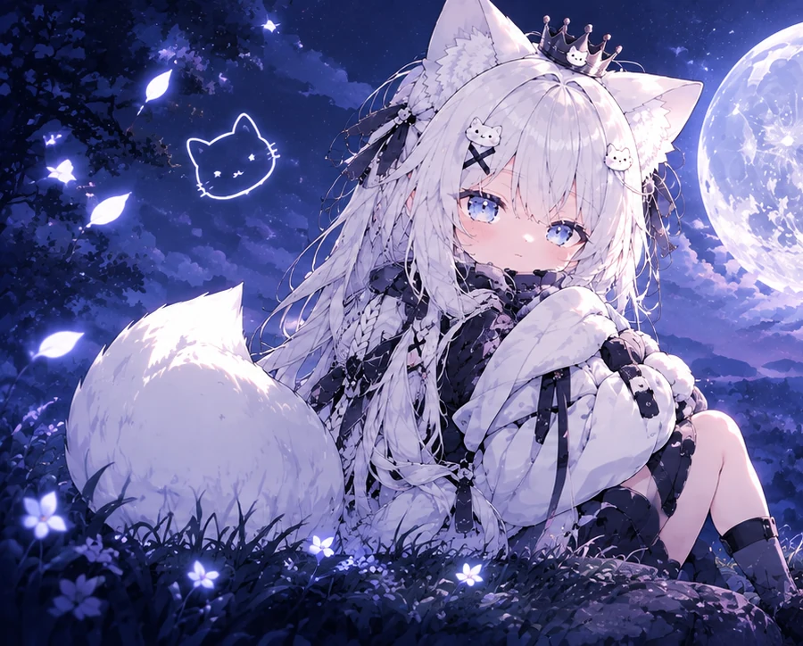
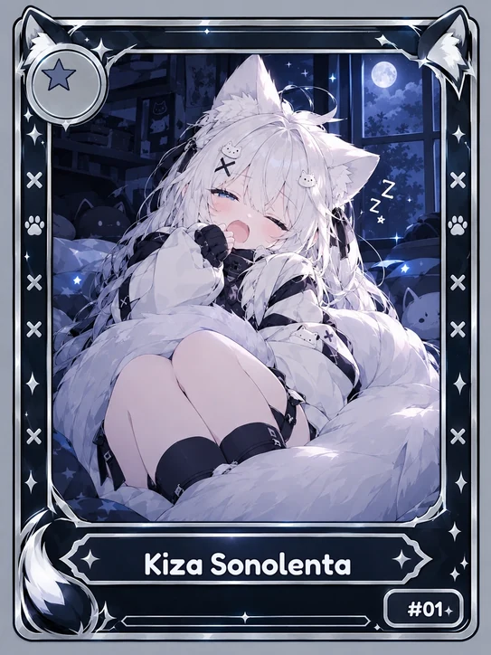
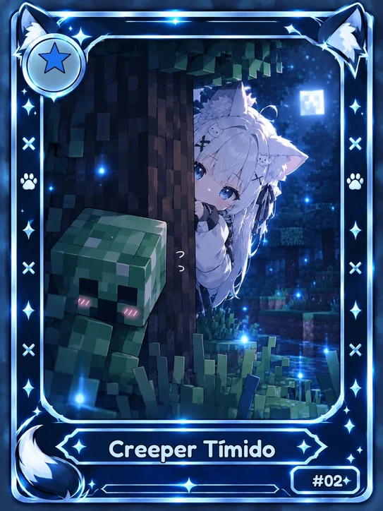
O Discord já está de pé e é por onde tudo começa. O servidor de Minecraft vem logo atrás.
Um clique e você já está dentro. A Kiza dá as boas-vindas.
Leia, clique em “Li e aceito” e o resto da toca se abre para você.
Marque a Kiza, abra sua figurinha grátis do dia e comece a subir de nível.
O servidor Bedrock está em construção. O endereço aparece aqui quando abrir.
Em construçãoEnquanto o servidor de Minecraft não abre, tem muita coisa funcionando por aqui. Tudo isso é a Kiza, nossa raposa-bot, trabalhando.
Entende o contexto, lembra de você, ajuda com Minecraft e rabisca o que você pedir. Sem frase pronta.
Ganhe no /daily, na pergunta do dia, em bumps e em drops surpresa no chat.
Colecione, complete o álbum e procure as raras.
Cada ajuda conta pontos no seu /fidelidade.
“Toda kitsune ganha uma cauda nova a cada grande história que vive. A Kiza nasceu com uma só.”
Um capítulo novo da lenda todo mês, com os amigos que ela faz na toca.
Abra um pacotinho por dia de graça, complete o seu álbum e vá atrás das raras. Cada carta é uma ilustração exclusiva.
Chame no chat e ela responde como gente. E se você contar algo, ela lembra depois.
Os humores da Kiza
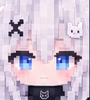
Normal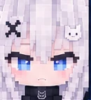
Brava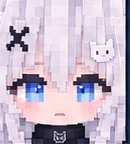
Triste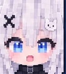
Surpresa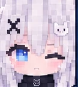
Piscando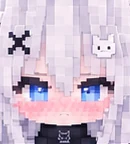
Envergonhada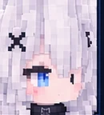
De ladokiza, qual sua cor favorita?
roxo! tipo, aquela cor de céu no final do dia, sabe?
kiza desenha você olhando as estrelas
toma, rabisquei rapidinho kkk

Trechos rápidos do bot e dos addons rodando de verdade.
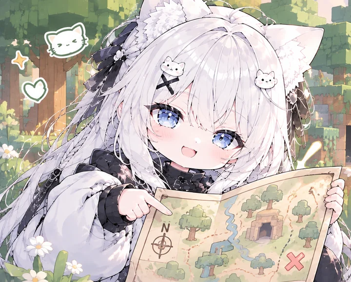
É para isso que serve chegar cedo: ajudar a decidir o que vem primeiro.
Celular e PC, com addons feitos do zero.
Perfis de jogador, rankings e muito mais, um passo de cada vez.
Sem pay-to-win.Nunca.
Odeio jogatina injusta. Quem apoia o servidor ganha mimos no Discord, e a vantagem dentro do jogo é de quem joga.
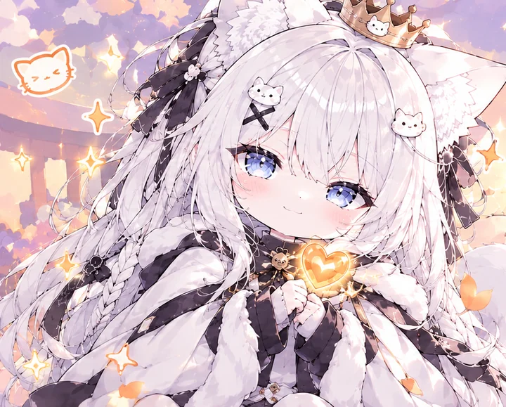
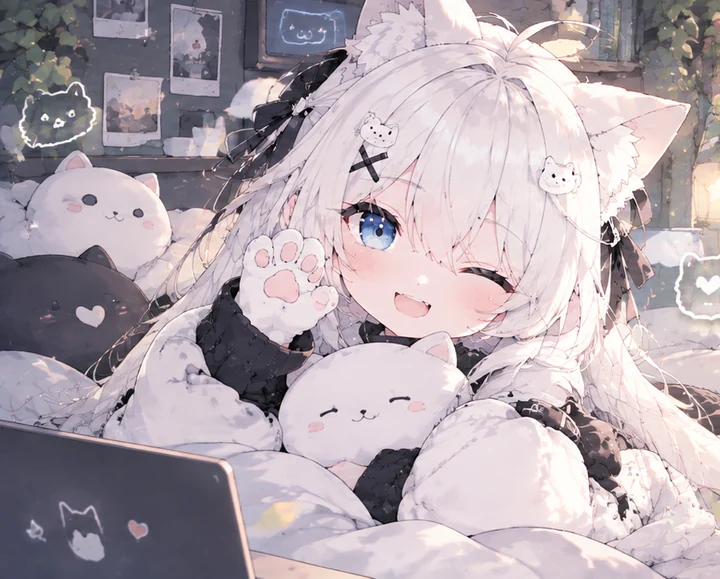
Sem spam e sem pressão. Só uma comunidade nova, com uma raposa te esperando.